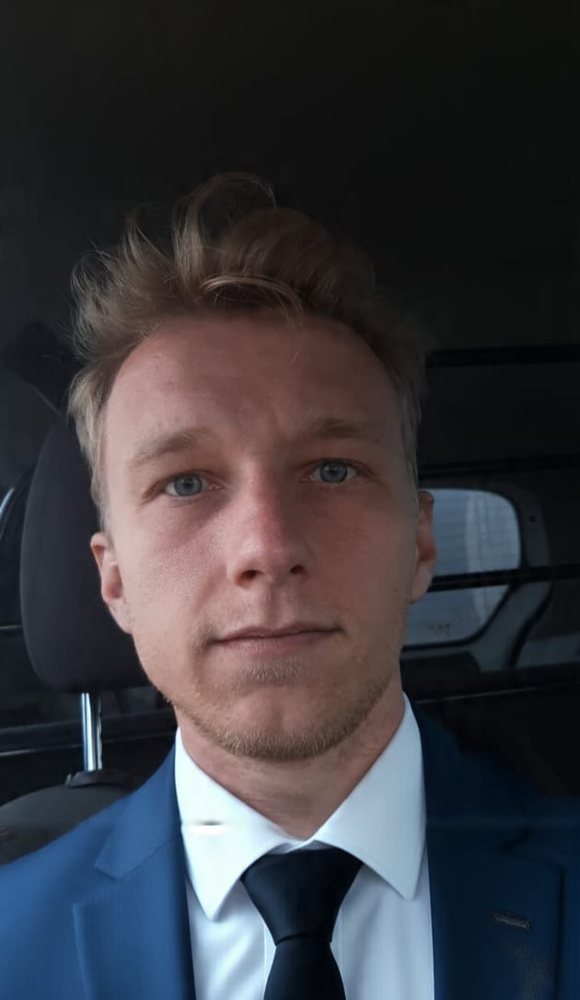

IT Technician & Network Specialist
Based in Gauteng, South Africa
7+ years hands-on experience in hardware repair, networking, servers, CCTV, and technical support.
View My Experience Get In Touch
Competent, adaptable, and self-starting IT professional offering strong computer literacy, hardware expertise, and excellent communication skills.
I thrive under pressure, enjoy solving complex technical problems, and love interacting with clients at all levels.
Languages: English (fluent), Afrikaans (fluent), German (intermediate)
Born 31 July 1997 • South African
This portfolio site was built by me using HTML, CSS & JavaScript — showcasing my growing web development skills too!
NCWSA (Network Computer Wireless) – Full Time
Computer Discount 3000
Various Clients
Ricco Engineering, Sky Lounge, Vaal Equestrian, Promotion work
Full certificates available on request
Open to new opportunities, freelance work, or just a chat about tech.
kylebolinski7@gmail.com
071 360 3422
References available upon request